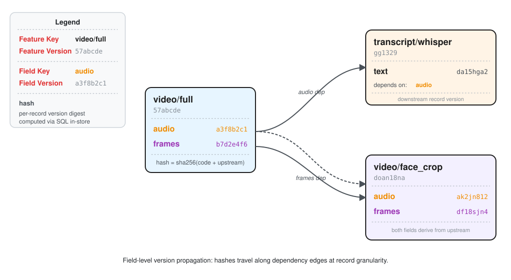
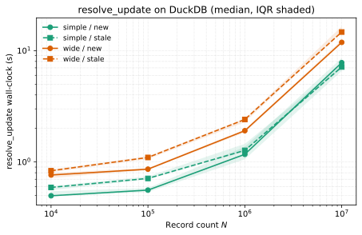

Summary¶
Software that processes large datasets often repeats expensive computations when any part of the input data or processing logic changes. Metaxy is about perfecting the art of doing nothing: only compute what changed, save time and money, and accelerate exploration. In machine learning pipelines that handle video, audio, and images, these computations run on Graphics Processing Units (GPUs) that cost 10 to 100 times more per hour than standard processors1. A small change to one processing step can trigger unnecessary recomputation of unrelated steps, wasting both time and money.
Metaxy is a Python library that tracks which specific data records need reprocessing after a change, rather than rerunning entire datasets. It builds a dependency graph that connects individual data fields across processing steps. When a researcher modifies one step, Metaxy identifies exactly which records are affected and which can be skipped. This selective approach lets downstream systems avoid redundant GPU work when a change does not affect a record, while preserving complete lineage for reproducibility.
The library treats the metadata store (which persists version entries), the compute engine (which evaluates feature code over dataframes), and the orchestrator (which schedules execution) as pluggable abstractions. Concrete integrations for the widely used Python ecosystem ship with the package (@ibis; @narwhals; @dagster; @ray), so that any compatible orchestrator can consume Metaxy's record-level diffs and schedule only the necessary GPU workloads.
Statement of Need¶
Machine learning practitioners iterate rapidly on feature definitions, model architectures, and training strategies. Reproducibility demands that every experiment maintain a clear record of which data and code produced each result. Traditional pipeline tools force a trade-off: rerun entire pipelines to guarantee correctness, or skip tracking to move quickly.
This trade-off is especially costly for multimodal pipelines. Consider a video processing system that extracts both audio transcripts and face detections. When a researcher improves the audio denoising algorithm, should the system recompute face detections that depend only on video frames? Existing orchestrators operate at table granularity, treating feature tables as atomic units. They cannot distinguish which fields within a record changed, forcing unnecessary recomputation of all downstream steps.
Metaxy resolves this problem through field-level dependency tracking at record granularity. Researchers declare features as Python classes that specify which upstream fields each computation depends on. The system constructs a directed acyclic graph where nodes represent feature fields and edges represent data flow (\autoref{fig:anatomy}). For each data record, Metaxy computes version hashes that combine code versions with upstream record versions, propagating changes along graph edges. When resolving incremental updates, the system returns only those records whose upstream dependencies have actually changed.
This approach delivers both rapid experimentation and reproducibility. Researchers modify feature definitions freely, and the system identifies exactly which records require reprocessing. The metadata layer preserves complete lineage, enabling retrospective audits of any experiment. By computing diffs before execution, teams quantify the impact of each change and defer updates that do not justify their computational cost.
The target audience includes ML engineers working with multimodal data, MLOps teams managing production feature pipelines, and research labs operating under compute budgets.

State of the Field¶
Several tools address aspects of feature management, but none, to our knowledge, provide field-level dependency tracking at record granularity as a standalone metadata layer. DVC (@dvc) versions datasets at the file level, treating each file as an opaque artifact without tracking individual records or fields within it. Feast (@feast) focuses on feature definition, materialization, and online serving. Recent Feast releases include DAG-based feature computation, but Feast does not expose field-level provenance for propagating version changes and deciding which downstream records require recomputation after an upstream modification. Apache Hamilton (@hamilton) builds dataflows from Python functions and can report lineage over the resulting DAG, typically at the level of nodes, columns, and dataframe outputs. It does not maintain per-record, per-field provenance for selective downstream invalidation. DataChain (@datachain) combines metadata management with a Python-native data processing framework and supports delta processing over new or changed records. However, its incremental model is tied to dataset processing within that framework rather than to a standalone field-level dependency graph that can drive recomputation across multiple compute backends.
Metaxy fills the gap by separating metadata from compute: it tracks field-level dependencies at record granularity and propagates version changes topologically through the dependency graph. This separation allows teams to integrate Metaxy with any orchestrator and compute engine, while retaining precise control over which records require reprocessing.
Software Design¶
Metaxy represents features as declarative models organized into a directed acyclic graph. Each feature declares its identifier columns, computed fields, and dependencies on upstream feature fields. The system constructs a global dependency graph at initialization, enabling downstream version propagation before any data processing occurs.
Version computation operates at two layers through deterministic hashing. Graph-level feature hashes combine field code versions with upstream structure once per code change, using a fixed hashlib.sha256 implementation. Record-level hashes run once per data row, combining per-record identifiers with upstream record versions inside the metadata store via SQL; this function is configurable and defaults to xxhash32 where the backend supports it, keeping hashing colocated with storage and avoiding expensive data transfers.
Field code versions are user-specified strings that developers bump to mark algorithmic changes. This is a deliberate design choice rather than an automatic-detection problem: a static analyzer cannot reliably distinguish a behavior-preserving refactor from a semantic change, and silent false-positive invalidation would trigger prohibitively expensive GPU recomputation. Metaxy therefore delegates this judgement to the author.
Feature versions aggregate field versions, and record versions map each data instance to the specific upstream versions that produced it, creating a per-record provenance trail.
This record-level granularity is what distinguishes Metaxy from table-level orchestrators. When an upstream field changes for a subset of records, only those downstream records that transitively depend on the changed field are marked for recomputation. Records with unchanged dependencies are skipped.
The metadata store is append-only: version entries are never overwritten, preserving the lineage needed for retrospective audits. Embedded stores suit prototyping while warehouse- and lakehouse-class stores scale to production workloads, all reached through the same feature API. The compute engine is equally pluggable: a backend-agnostic dataframe abstraction lets users swap implementations without touching feature code.
Design Trade-offs¶
Metaxy's architecture rests on three deliberate design commitments.
First, the metadata layer is decoupled from the compute engine and orchestrator by design rather than by compromise: Metaxy is a pluggable library that exposes a record-level dependency graph which any orchestrator can consume. The same version graph drives embedded prototyping, warehouse-scale production, and distributed GPU scheduling without changes to feature definitions, reusing the portable dependency-graph abstraction long studied in build-systems and data-lineage research (@mokhov2018build; @cui2003lineage; @buneman2001why).
Second, record-level hashing and the increment diff are pushed into the metadata store via SQL rather than computed client-side. This yields two concrete benefits: the caller never streams full metadata tables out of the store (only the computed increment crosses the wire), and the hash-and-join work runs inside the store, so resolve_update stays lightweight enough to invoke from laptops or dashboards while the store scales the compute (\autoref{tab:benchmark}), consistent with the principle of colocating incremental computation with its data (@acar2006adaptive).
Third, Metaxy hashes provenance signatures (code version plus upstream record versions) instead of the raw payloads that content-addressable storage (CAS) would require. CAS is not merely expensive here, it is inapplicable in principle: the increment must be known before downstream computation runs, so there is no content to address yet. Hashing the provenance signature lets Metaxy decide staleness without ever materialising the downstream payload, matching the provenance-first view of PROV (@moreau2013prov; @cheney2009provenance); users may still attach content-derived versions after the fact through the user-defined data-version hook, for instance to deduplicate identical outputs.
Performance¶
Per-record hashing and the downstream diff are executed as SQL inside the metadata store, so their throughput is bounded by the vectorised hash kernels of the backend rather than by Python.
The benchmark in publications/2026-introducing-metaxy/ is implemented as a pytest-benchmark suite that exercises two feature graphs: a simple graph (one root with two fields feeding a single-field leaf) and a wide graph (two roots with four fields each feeding a two-field leaf, so the leaf must join two upstream tables and aggregate eight field versions per record).
For each graph and record count \(N\), the benchmark measures resolve_update in two phases: the initial materialisation (resolve_new) and, after bumping the upstream audio provenance for 10% of records, the incremental diff (resolve_stale).
- To isolate caching effects between rounds, each measurement runs in
pytest-benchmark's pedantic mode with asetupcallback that allocates a fresh DuckDB file in its own temporary directory and reseeds it from scratch. The DuckDB buffer pool, temp-table state, and file-system page cache for the new inode are therefore cold at the start of every round, so no round can inherit state from a previous one. The configuration under test setsenable_map_datatype = trueinmetaxy.toml, reflecting the upcoming default; the provenance column is stored and exchanged as a nativeMap. We report ten independent rounds per cell on an Apple M2 Max (64 GiB RAM, Python 3.10.19, DuckDB 1.4.3,xxhash64): the median as a robust central estimate, the 25th--75th percentile interquartile range (IQR) as a non-parametric confidence band, and mean \(\pm\) standard deviation for readers preferring a parametric view (\autoref{tab:benchmark}). - End-to-end wall-clock scales near-linearly with \(N\) on both graphs (\autoref{tab:benchmark}, \autoref{fig:benchmark}); the constant-factor gap between
simpleandwideat any given \(N\) reflects the additional upstream join and the richer provenance struct rather than super-linear slowdown, confirming that the SQL pushdown strategy absorbs join width well. -
resolve_updatewall-clock time on DuckDB for thesimpleandwidegraphs at \(N\) records over 10 pedantic rounds per cell (10% change fraction, fresh DuckDB file per round,enable_map_datatype = true). Times are milliseconds;IQRis \([q_{25}, q_{75}]\). \label{tab:benchmark}
| scenario | N | new median (ms) | new IQR (ms) | new mean \(\pm\) sd (ms) | stale median (ms) | stale IQR (ms) | stale mean \(\pm\) sd (ms) |
|---|---|---|---|---|---|---|---|
| simple | 10,000 | 497.2 | [489.6, 546.2] | 547 \(\pm\) 116 | 590.8 | [558.1, 606.2] | 585 \(\pm\) 32 |
| simple | 100,000 | 558.8 | [536.2, 582.7] | 583 \(\pm\) 81 | 711.6 | [696.6, 741.6] | 801 \(\pm\) 296 |
| simple | 1,000,000 | 1,171.9 | [1,056.9, 1,370.8] | 1,225 \(\pm\) 203 | 1,270.8 | [1,243.2, 1,455.3] | 1,342 \(\pm\) 167 |
| simple | 10,000,000 | 7,797.9 | [6,563.7, 8,594.4] | 7,811 \(\pm\) 1,176 | 7,133.4 | [6,950.9, 7,504.3] | 7,285 \(\pm\) 586 |
| wide | 10,000 | 763.8 | [717.6, 798.9] | 774 \(\pm\) 79 | 834.0 | [808.1, 855.4] | 830 \(\pm\) 47 |
| wide | 100,000 | 861.5 | [846.6, 882.7] | 866 \(\pm\) 23 | 1,097.9 | [1,061.1, 1,125.2] | 1,089 \(\pm\) 40 |
| wide | 1,000,000 | 1,909.6 | [1,841.5, 1,956.8] | 1,908 \(\pm\) 69 | 2,408.2 | [2,279.9, 2,458.5] | 2,394 \(\pm\) 114 |
| wide | 10,000,000 | 11,870.8 | [11,651.2, 12,436.3] | 12,070 \(\pm\) 597 | 14,695.4 | [14,554.2, 16,532.9] | 15,290 \(\pm\) 1,052 |

Quality Control¶
Correctness is validated through automated tests covering three properties. Snapshot testing is used to ensure version computation consistency across Metaxy codebase changes. Incremental update tests verify that the system returns exactly those records whose upstream dependencies changed, neither missing updates nor triggering false positives. Cross-backend tests ensure different metadata store backends produce identical versioning results, matching with the "golden" DuckDB implementation.
Ongoing Research Projects¶
Example pipelines demonstrate the system's impact on multimodal workflows. A video processing pipeline defines features for audio transcription and face detection with field-level dependencies. When only the audio processing algorithm changes, the system correctly schedules transcription updates for affected records while leaving face detection metadata unchanged. This selective recomputation is the core value proposition: the metadata layer exposes the exact update set, so teams can schedule only affected records instead of maintaining that decision logic manually.
Metaxy has been running in production at Anam on multimodal video pipelines whose training corpora reach the low millions of samples. Before Metaxy, achieving selective recomputation at this scale required manual metadata edits, ad-hoc overrides, and custom per-pipeline bookkeeping; Metaxy standardizes those decisions into a declarative model so that correct, auditable incremental updates become the default path rather than a bespoke engineering effort for each new feature. Combined with the append-only metadata layer introduced above, every experiment remains reproducible, closing a critical gap in machine learning workflows.
The system bridges prototyping and production through vendor-neutral abstractions. Researchers define features once and deploy them across embedded stores on laptops, warehouse-class stores in data centers, or managed cloud stores, without modifying feature code. This portability lowers the barrier to disciplined metadata management, making reproducibility the default rather than an afterthought.
The project welcomes contributions at https://github.com/anam-org/metaxy. Documentation is available at https://docs.metaxy.io.
AI Usage Disclosure¶
Generative AI tools were used during development for code completion and documentation drafting. All AI-generated content was reviewed and refined by the authors. Large parts of the documentation were written by hand.
Acknowledgements¶
We thank the maintainers of the open-source projects Metaxy builds upon, and the contributors who tested early releases across heterogeneous hardware. Funding and in-kind support were provided by Anam, the Complexity Science Hub Vienna, and the Austrian Supply Chain Intelligence Institute.
References¶
-
AWS EC2 on-demand pricing, 2026-04; the exact ratio depends on the instance families compared, with common CPU-to-GPU comparisons falling in this range and top-end accelerators exceeding it. ↩